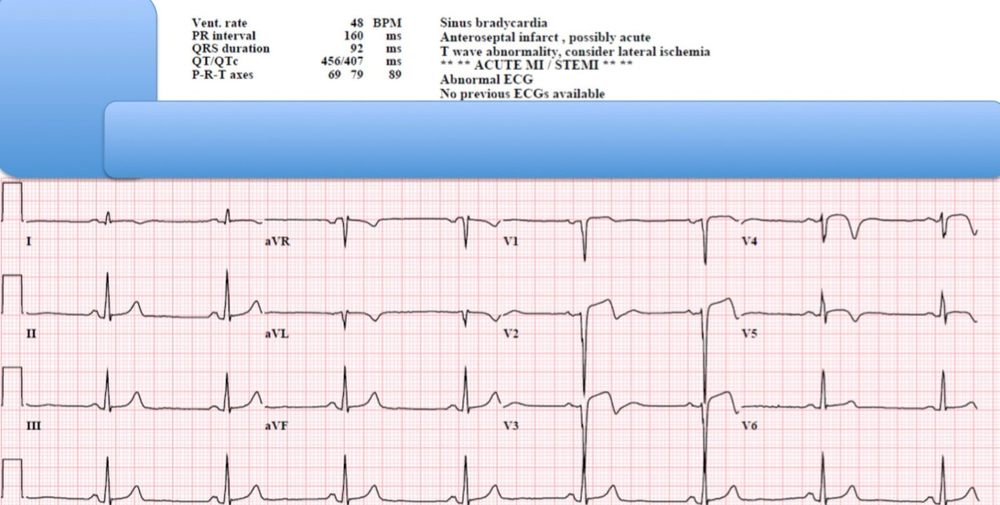
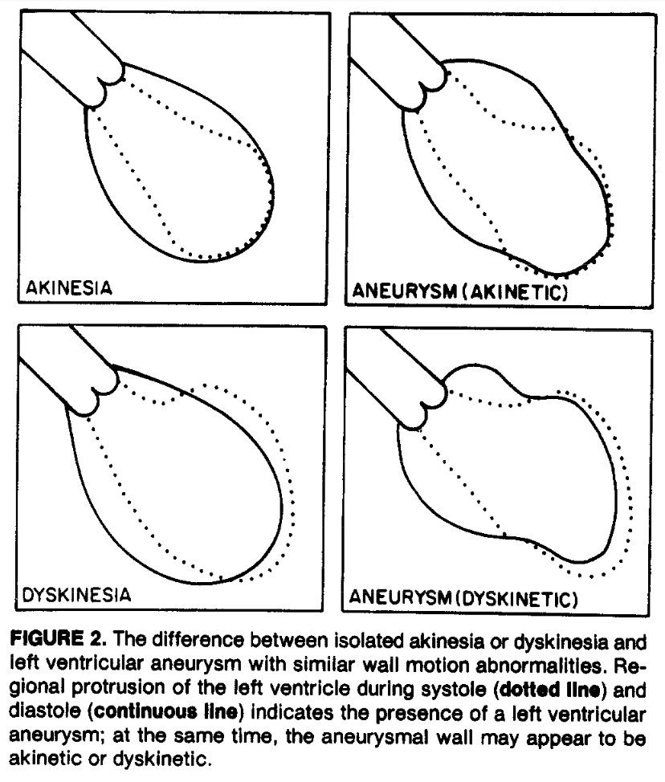
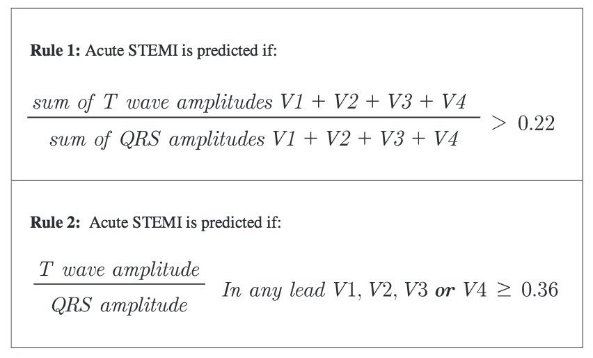
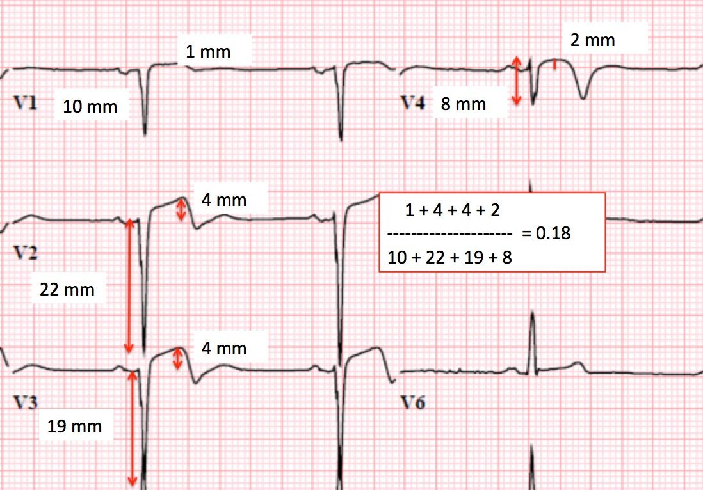
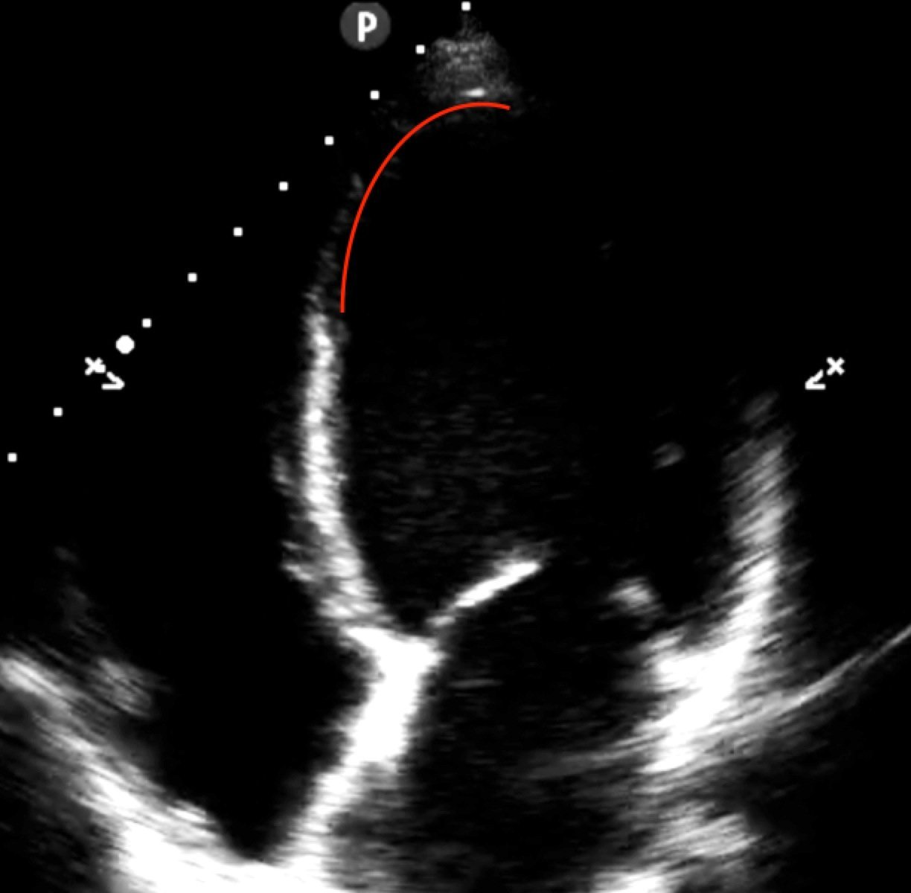
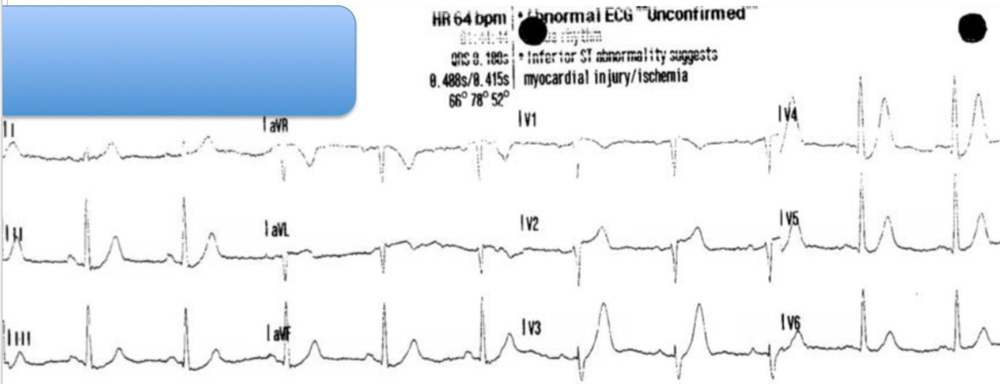
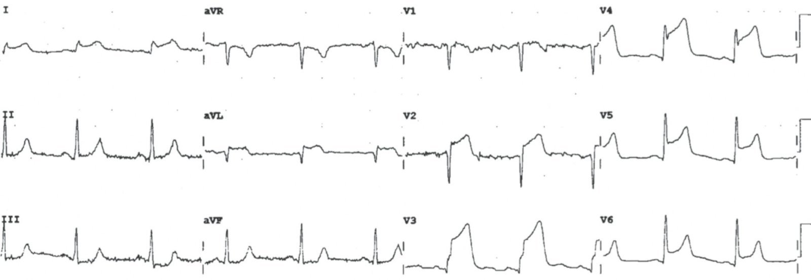
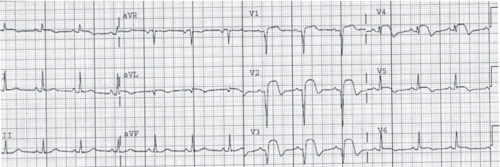

22/09/2015 — Đây có phải STEMI? Không, đây là một trong những nguyên nhân thường gặp nhất gây kích hoạt phòng thông tim dương tính giả
Bản dịch tiếng Việt của bài "Is this STEMI? No, it is one of the most common reasons for false cath lab activation." – Dr. Smith’s ECG Blog. Giữ nguyên toàn bộ 8 hình ảnh và 1 video của bản gốc.
Bài này do Brooks Walsh đóng góp, có chỉnh sửa và bổ sung đôi chút, cộng thêm một phần về các trường hợp kích hoạt phòng thông tim (cath lab) dương tính giả do tôi viết thêm. Brooks là một bác sĩ cấp cứu giỏi xuất thân từ chương trình nội trú Yale, có niềm say mê và năng khiếu đối với điện tâm đồ và siêu âm tim tại giường.
Ca bệnh
Một người đàn ông trung niên được chuyển từ một phòng khám chăm sóc ban đầu tới khoa cấp cứu (ED) vì “thay đổi trên điện tâm đồ” và lo ngại STEMI.


Điện tâm đồ ghi tại phòng khám hôm đó, dù không có ở đây, về cơ bản giống hệt điện tâm đồ trên. Ông đến phòng khám theo lịch hẹn. Ông phủ nhận có bất kỳ cơn đau ngực, khó thở (SOB), buồn nôn hay triệu chứng thiếu máu cục bộ nào khác vào bất cứ lúc nào trong ngày. Tuy nhiên, hồ sơ gửi từ phòng khám cho biết ông từng bị STEMI được điều trị bằng PCI tại một bệnh viện khác 4 tháng trước.
Ngoài một STEMI mới, điều gì có thể giải thích đoạn ST chênh lên?
Sóng T hai pha rất rõ, với nhánh xuống dốc đứng, gợi ý hình ảnh Wellens. Tuy nhiên, tăng tiến sóng R kém đã loại trừ hội chứng Wellens, vốn đòi hỏi sóng R được bảo tồn. Ngoài ra, bệnh nhân phủ nhận mọi triệu chứng gần đây. (Hội chứng Wellens thực sự được ghi nhận sau khi các triệu chứng thiếu máu cục bộ đã hết.)
Sóng S sâu và ST chênh lên có thể là hậu quả của phì đại thất trái. Dù sóng R có thể không có trong LVH, LVH có sóng R điện thế cao ở V4-V6. Vì vậy đây KHÔNG phải LVH.
ST chênh lên tồn tại dai dẳng sau nhồi máu cơ tim cũ (còn gọi là “hình thái phình thất trái”)
Đây là một thực thể điện tâm đồ được gọi chính xác nhất là “STE dai dẳng sau nhồi máu cơ tim cũ”, nhưng thường được gọi hơn (và kém chính xác hơn đôi chút) là phình thất trái. Hình ảnh này thường gặp sau các nhồi máu cơ tim thành trước diện rộng (1), đặc biệt ở những bệnh nhân được điều trị tái tưới máu muộn, hoặc không được điều trị tái tưới máu. Điển hình, những bệnh nhân này có phức bộ QS sâu ở V1 – V3, hoặc có thể có sóng r rất nhỏ kèm sóng S sâu. STE thường nhẹ, dưới 3mm, và rõ nhất ở các chuyển đạo V1-V3.
Mối tương quan với phình giải phẫu không chặt chẽ – bệnh nhân có STE dai dẳng có thể không có phình giải phẫu thực sự trên siêu âm tim, mà chỉ biểu hiện loạn động tâm thu. (2) Ngược lại, nhiều bệnh nhân có loạn động hoặc phình lại không có STE dai dẳng. (3)


Vấn đề của STE dai dẳng là bệnh nhân có thể bị cho điều trị tái tưới máu không phù hợp, hoặc bị từ chối điều trị tái tưới máu, nếu họ đến viện với triệu chứng mới kiểu thiếu máu cục bộ. Làm sao chúng ta chắc chắn rằng ông ấy không đang bị một STEMI mới chồng lên STEMI cũ?
Phân biệt STE dai dẳng với “STE cấp trên nền mạn”
Phương pháp thứ nhất là phân tích chiều cao sóng T so với biên độ phức bộ QRS (tức chiều cao R + độ sâu S).
Dr. Stephen Smith đã xây dựng và thẩm định hai phép tính có thể giúp phân biệt nhồi máu cơ tim mới với STE dai dẳng. (4, 5)


Điều quan trọng cần biết là quy tắc này chỉ áp dụng cho
những trường hợp mà chẩn đoán phân biệt là STEMI thành trước với phình
thất trái thành trước. Đó là khi có
sóng Q sâu, hình thành rõ (thường là sóng QS).
Hai lời cảnh báo khác:
1. Ở bệnh nhân đau ngực kéo dài (> 6 giờ), sóng T trở nên bớt tối cấp và đây là những trường hợp âm tính giả duy nhất.
2. STEMI cấp có thể chồng lên phình thất trái. Khi đó, sóng T lại trở nên tối cấp, nên công thức vẫn đúng dù có phình thất trái nền.
Áp dụng quy tắc cho ca này:
Trong ca này, tôi đã ước lượng quá cao chiều cao sóng T ở V4, nhưng công thức vẫn ủng hộ STE dai dẳng hơn là STEMI.


Thứ hai, siêu âm tim tại giường cho thấy mỏm tim phình, vô động, với thành mỏng. STEMI cấp thường có thành vô động, nhưng thành sẽ không mỏng.
Điều này phù hợp với một nhồi máu cơ tim cũ ở vùng chi phối của LAD. Dù vô động có thể gặp ở cả STE dai dẳng lẫn nhồi máu cơ tim cấp, tình trạng loạn động và thành mỏng ủng hộ mạnh STE dai dẳng.
Mỏm tim cũng giãn. Tim cần thời gian để giãn ra sau nhồi máu cơ tim; điều này không có vào thời điểm STEMI cấp.
Đây là một ảnh tĩnh từ phần sau của video:


Một lời cảnh báo: Siêu âm tim trọng điểm (khác với siêu âm tim toàn diện) không nên được dùng để định hướng quyết định tái tưới máu ở những bệnh nhân có triệu chứng đáng lo ngại, khi khả năng tắc mạch vành cấp cao. Bệnh nhân này hoàn toàn không có triệu chứng, siêu âm tim chỉ đơn thuần hỗ trợ cho nhận định lâm sàng, và được dùng trong bối cảnh đã có các điện tâm đồ cũ và báo cáo thông tim.
Điện tâm đồ cũ lúc bệnh nhân thực sự bị STEMI:
Cuối cùng, hồ sơ được lấy từ bệnh viện nơi đã làm PCI nhiều tháng trước, gồm trọn chuỗi điện tâm đồ. Bệnh nhân bị đau ngực từ sáng sớm và đã gọi 911. Đội cấp cứu ngoài viện (EMS) đã ghi một điện tâm đồ.


Tại khoa cấp cứu, điện tâm đồ tiến triển thành hình ảnh STEMI thành trước kinh điển.


Bệnh nhân được chuyển viện để tái tưới máu. Đáng tiếc là các điện tâm đồ ghi sau PCI cho thấy STE dai dẳng.


STE dai dẳng như vậy được gọi là hiện tượng “không tái lưu” (No-Reflow). Các tiểu động mạch phía hạ lưu bị bít tắc nghiêm trọng bởi các khối kết tập tiểu cầu–fibrin đến mức, dù mạch lớn đã được tái tưới máu, vẫn không có tái tưới máu thực sự. Điều này có thể được đánh giá trên chụp mạch vành qua mức ngấm thuốc cơ tim (“blush”) hoặc phân độ tưới máu cơ tim TIMI.
Kết cục của các ca được điện tâm đồ tiên đoán tốt hơn so với chụp mạch vành, với STE dai dẳng báo trước kết cục xấu ngay cả khi động mạch đã thông!
Diễn tiến ca bệnh
Tại khoa cấp cứu của chúng tôi, các lần đo troponin liên tiếp của ông đều âm tính. Sau khi có được hồ sơ cũ, ông được cho xuất viện về nhà.
Các hình ảnh được sao in lại theo điều khoản “Sử dụng hợp lý” (Fair Use) của Luật Bản quyền, vốn cho phép sao in như vậy vì mục đích giáo dục phi lợi nhuận.
Hình thái phình thất trái có gây kích hoạt phòng thông tim dương tính giả không?
Trước khi các nghiên cứu này của Smith và
Klein được công bố, phình thất trái (LVA) thành trước rất khó phân biệt với STEMI thành trước trên
điện tâm đồ, và có lẽ là căn nguyên bị đọc sai phổ biến nhất gây STE dương
tính giả ở những bệnh nhân đến khoa cấp cứu với triệu chứng thiếu máu
cục bộ [7, 8, 9, 10, 11, 12, 13].
Brady và cs. đã cho 450 bác sĩ
cấp cứu (EP) xem mười một điện tâm đồ. Điện tâm đồ LVA bị
chẩn đoán nhầm là STEMI cấp bởi 72% số EP, tỷ lệ phân loại sai cao hơn
bất kỳ điện tâm đồ nào khác. Việc phân loại sai này
lẽ ra đã dẫn tới điều trị tiêu sợi huyết không phù hợp ở 28% số EP [7]. Trong một nghiên cứu thứ hai của cùng nhóm tác giả, có
202 điện tâm đồ có STE và 12 điện tâm đồ bị chẩn đoán nhầm – năm điện tâm đồ cho thấy LVA,
trong đó hai điện tâm đồ bị chẩn đoán là STEMI [8].
Tất cả lẽ ra đều được nhận ra nhờ
quy tắc này. Miller và cs. đã nghiên cứu 100 bệnh nhân nhập đơn vị chăm sóc
mạch vành (CCU) vì nghi ngờ nhồi máu cơ tim. Trong số này, 31 người có STE trên điện tâm đồ; 21 trên 21
người không có nhồi máu cũ và 5 trên 10 người có
nhồi máu cũ bị nhồi máu cơ tim cấp (AMI). Cả 5 điện tâm đồ dương
tính giả có STE đều nằm ở vị trí của ổ nhồi máu sóng Q trước đó
(LVA), và STE không phản ánh tổn thương cấp [11]. Trong một nghiên cứu lớn, gần đây hơn, Larson và cs.
cho thấy 20 trên 123 lần kích hoạt phòng thông tim dương tính giả là do
LVA [12].
Trong
tất cả các nghiên cứu này, và cả trong nghiên cứu của Rokos và cs. [13], mọi điện tâm đồ được nêu là
một lần kích hoạt phòng thông tim dương tính giả lẽ ra đều đã được nhận diện không chút mơ hồ
là phình thất trái nhờ các quy tắc Smith-Klein!
Tài liệu tham khảo
1. Tibrewala AV, Asch F, Shah S, Fuisz A, Lindsay Jr J. Association of Size of Myocardial Scar and Persistence of ST-Segment Elevation After Healing of Anterior Wall Myocardial Infarction. [Liên quan giữa kích thước sẹo cơ tim và sự tồn tại dai dẳng của ST chênh lên sau khi nhồi máu cơ tim thành trước đã lành.] Am J Cardiol. 2007;99(8):1106-1108. doi:10.1016/j.amjcard.2006.11.058.
2. Arvan S, Varat MA. Persistent ST-segment elevation and left ventricular wall abnormalities: A 2-dimensional echocardiographic study. [ST chênh lên dai dẳng và bất thường thành thất trái: một nghiên cứu siêu âm tim 2 chiều.] Am J Cardiol. 1984;53(11):1542-1546. doi:10.1016/0002-9149(84)90576-9.
3. Madias JE. Discordance of diagnosis of ventricular aneurysm made by the electrocardiogram and myocardial imaging: “ST-segment counterpoise” as a hypothetical mechanism. [Sự không tương hợp giữa chẩn đoán phình thất bằng điện tâm đồ và bằng hình ảnh học cơ tim: “đối trọng đoạn ST” như một cơ chế giả định.] J Electrocardiol. 2006;39(3):340-341. doi:10.1016/j.jelectrocard.2006.02.009.
4. Smith SW. T/QRS Amplitude Best Distinguishes Acute
Anterior MI from Anterior Left Ventricular Aneurysm. [Tỷ số biên độ T/QRS phân biệt tốt nhất nhồi máu cơ tim cấp thành trước với phình thất trái thành trước.] American Journal of Emergency Medicine 2005; 23(3):279-287.
5. Klein LR.
Shroff G. Beeman W. Smith
SW. Electrocardiographic Criteria to
Differentiate Acute Anterior ST Elevation Myocardial Infarction from Left
Ventricular Aneurysm. [Tiêu chuẩn điện tâm đồ phân biệt nhồi máu cơ tim cấp thành trước có ST chênh lên với phình thất trái.] The American Journal of Emergency Medicine 2015; 33(6):786-790.
6. Napodano M, Tarantini G, Ramondo A, và cs. Myocardial abnormalities underlying persistent ST-segment elevation after anterior myocardial infarction: [Các bất thường cơ tim nằm dưới tình trạng ST chênh lên dai dẳng sau nhồi máu cơ tim thành trước.] J Cardiovasc Med. 2009;10(1):44-50. doi:10.2459/JCM.0b013e32831967b2.
7. Brady WJ, Perron AD, Chan T. Electrocardiographic ST segment elevation: correct identification of AMI and non-AMI syndromes by emergency physicians. [ST chênh lên trên điện tâm đồ: bác sĩ cấp cứu nhận diện đúng AMI và các hội chứng không phải AMI.] Acad Emerg Med 2001;8:349 – 60.
8. Brady WJ, Perron A, Ullman E. Errors in emergency physician interpretation of ST-segment elevation in emergency department chest pain patients. [Sai sót của bác sĩ cấp cứu khi diễn giải ST chênh lên ở bệnh nhân đau ngực tại khoa cấp cứu.] Acad Emerg Med 2000;7:1256 – 60.
9. Engel J, Brady WJ, Mattu A, Perron AD. Electrocardiographic ST elevation: left ventricular aneurysm. [ST chênh lên trên điện tâm đồ: phình thất trái.] Am J Emerg Med. 2002 May;20(3):238-42.
10. Deshpande A, Birnbaum Y. ST-segment elevation: Distinguishing ST elevation myocardial infarction ST elevation secondary to nonischemic etiologies. [ST chênh lên: phân biệt nhồi máu cơ tim ST chênh lên với ST chênh lên thứ phát do các căn nguyên không thiếu máu cục bộ.] World J Cardiol. 2014 Oct 26;6(10):1067-79.
11. Miller DH, Kligfield P, Schreiber TL, Borer JS. Relationship of prior myocardial infarction to false-positive electrocardiographic diagnosis of acute injury in patients with chest pain. [Liên quan giữa nhồi máu cơ tim cũ và chẩn đoán dương tính giả tổn thương cấp trên điện tâm đồ ở bệnh nhân đau ngực.] Arch Intern Med 1987;147: 257- 61.
12. Larson DM, Menseen KM, Sharkey SW, Duval S và cs. “False-positive” cardiac catheterization laboratory activation among patients with suspected ST-segment elevation myocardial infarction. [Kích hoạt phòng thông tim “dương tính giả” ở bệnh nhân nghi nhồi máu cơ tim ST chênh lên.] JAMA. 2007 Dec 19; 298 (23):2754-60.
13. Rokos IC, French WJ, Mattu A, Nichol G, và cs. Appropriate cardiac cath lab activation: optimizing electrocardiograph interpretation and clinical decision making for acute ST-elevation myocardial infarction. [Kích hoạt phòng thông tim phù hợp: tối ưu hóa việc diễn giải điện tâm đồ và ra quyết định lâm sàng trong nhồi máu cơ tim cấp ST chênh lên.] Am Heart J. 2010 Dec; 160(6):995-1003.